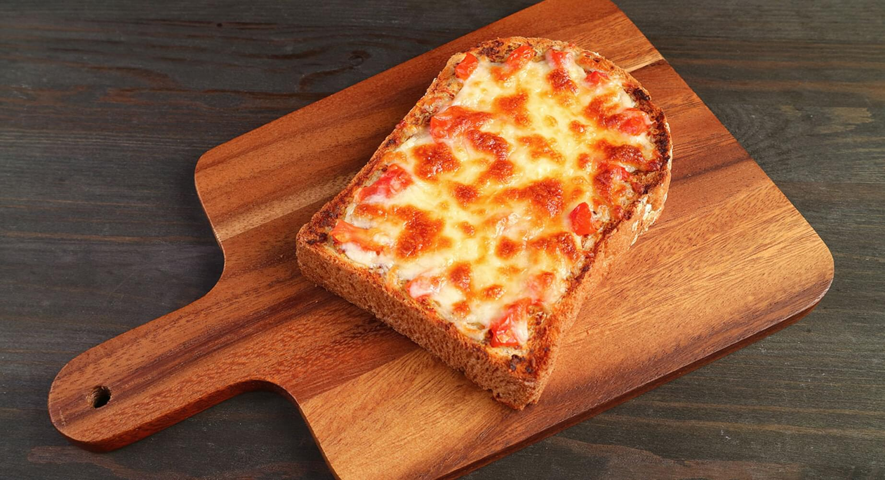

Toast Pizza

Description
It is a very simple recipe you can make for a quick snack and the crunch of the bread is the best part of it
Ingredients
- A slice of a bread
- Pizza sauce
- Cheese
- Seasoning
How to make it
- Take a nonstick pan and toast just one side of the bread
- On the toasted side of the bread put the pizza sauce and cheese if you like you can put seasoning
- Now take the bread and put it in the pan on low flame, put the lid of the pan and let it do the job
- Check after some minutes if the cheese has melted and the bottom of the bread has a nice crust after that enjoy your Toast Pizza
Return To Main Page